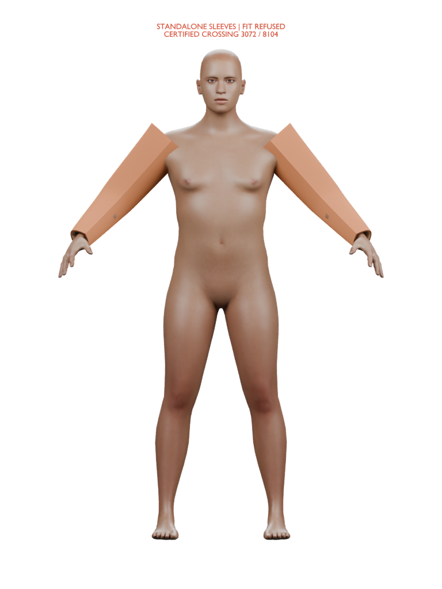
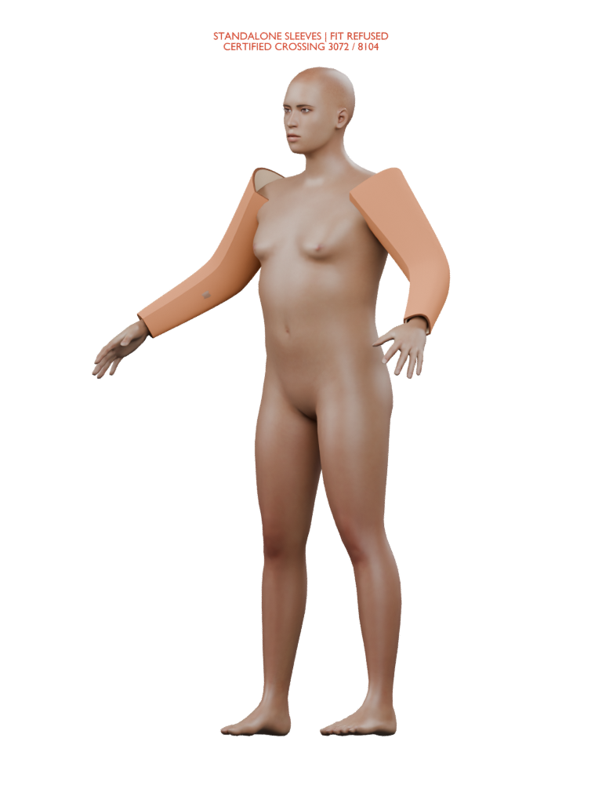
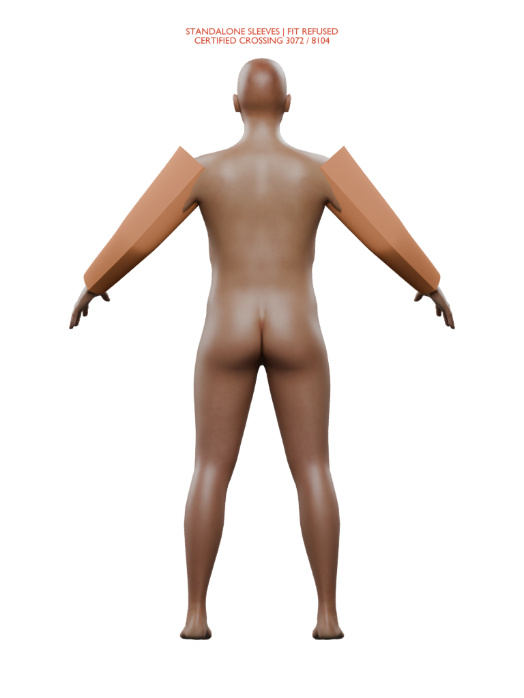

Ari — first standalone sleeve views
Static fit refused · standalone sleeves
These unchanged sleeves cross Ari's body. The views are for judging their shape before a new connected garment is authored. They are not a fitted or finished jacket.
Forearm direction, taper and wrist placement are useful references. The upper ends remain pointed and detached, with broad flat faces and unresolved contrasting forearm patches. This fixed shape is refused; open each image for the full-size original.
Front

Fit refused. Taper and wrist placement readable; upper ends unfinished.Oblique

Fit refused. Elbow direction readable; open proximal interior and hard shoulder transition.Rear

Fit refused. Pointed upper corners and abrupt underarm edges.The torso connection, lining separation, full coverage, cuffs, material detail and moving fit remain unfinished. Ari's body, face, skin and curls also remain prototypes.
Original design references
 Original bomber sheet: design vocabulary, not a metric pattern or fit proof.
Original bomber sheet: design vocabulary, not a metric pattern or fit proof. Original character direction. Different pose, expression and lighting; no measured anatomy transfer.
Original character direction. Different pose, expression and lighting; no measured anatomy transfer.Preserved bare-body control
 Same saved actor, earlier camera/frame. No pixel-equivalence claim.
Same saved actor, earlier camera/frame. No pixel-equivalence claim.